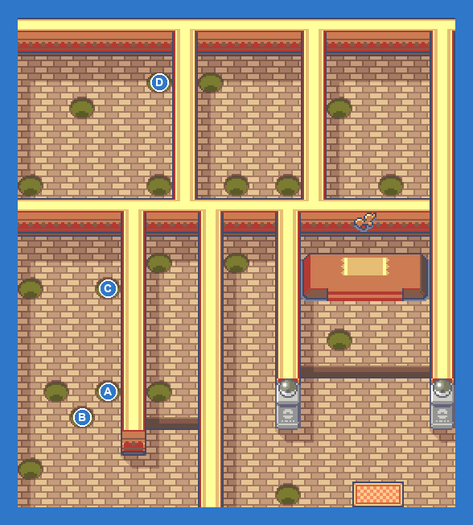
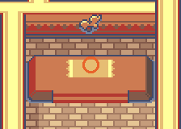

Fire-type. Water, Ground and Rock types walk through it; watch Torkoal's Overheat and White Smoke. Reward: Heat Badge, and your rival meets you outside with the Go-Goggles.
| Leader FLANNERY: Slugma LV26; Growlithe LV27; Camerupt LV28; Torkoal LV29 Hard: Numel LV26; Slugma LV26; Growlithe LV27; Camerupt LV28; Torkoal LV29 (ITEM_WHITE_HERB) Easy: Numel LV24; Slugma LV24; Camerupt LV26; Torkoal LV29 |
| AKindler COLE: Numel LV23 |
| BCooltrainer GERALD: Kecleon LV23 |
| CKindler AXLE: Numel LV23 |
| DBattle Girl DANIELLE: Meditite LV23 |
| ELeader FLANNERY: Slugma LV26; Growlithe LV27; Camerupt LV28; Torkoal LV29 |